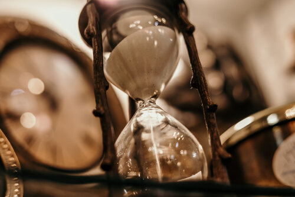

⇦ lerina.github.io - lerina - code - game dev
The thrust RPG
The heart of the game
Given a set of Tasks,
▲ Without Distraction
Beat the time
Build the habit to beat the timer
- Pick a Task or step.
- Set the time to beat.
- Finish before the time is up.
● Perform the Process
Perform Deepwork
Practice Deepwork for long periods.
Start with 20 minutes, then 40, 60, …
Perform the task. Nothing else matters until the time is up.
■ While in Session
Aim for 3 hours sessions
Divide the 3 hours into work sessions
Start gradually in 20, 40, 60, 40 , 20 minutes chunks.
more about the thrust Productivity System
thrust RPG Gamification
We can use this productivity system to power our RPG game.